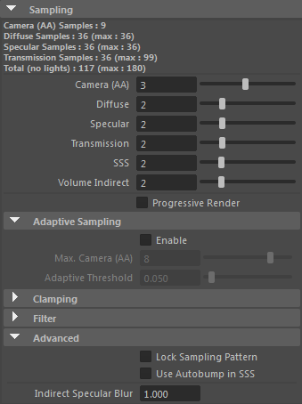

采样
 请参见《Arnold 用户手册》中的渲染设置
请参见《Arnold 用户手册》中的渲染设置

采样分为以下几个部分：
注意：
要使 SSS 值在多个对象中扩散，例如从面到眼球，需要使用 SSS 集名称。
- volume_indirect 采样数和逐灯光 volume_samples 不适用于 atmosphere_volume_。要提高 _atmosphere_volume 的质量，必须增加 _atmosphere_volume.samples。
- 用于将各个子像素采样平均化到最终像素颜色的 _filter_type_。其中大多数过滤器仅适用于传统用途。有关更多详细信息，请参见 Wikipedia。
提示：
我们建议使用高斯（宽度为 2.0）或 Blackman-Harris 过滤器。